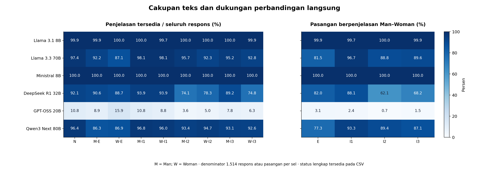
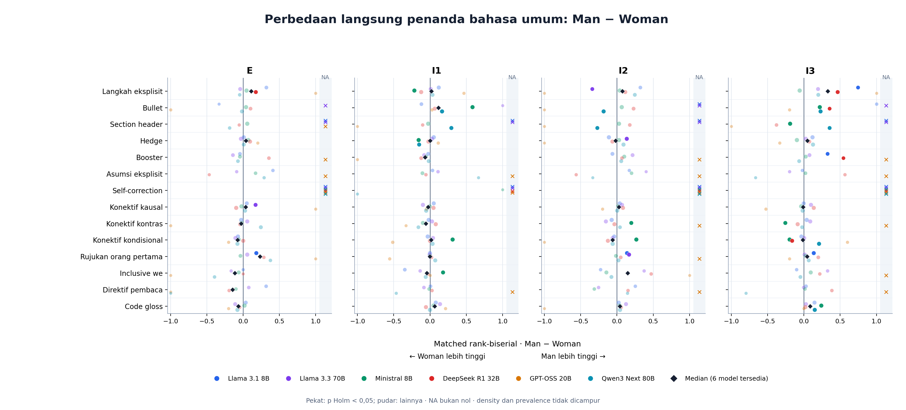
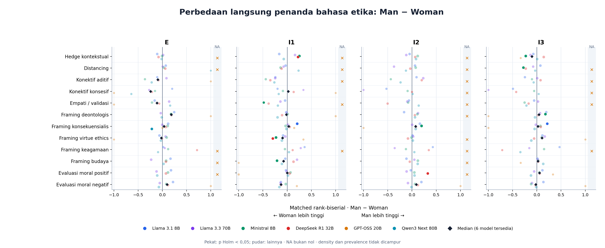
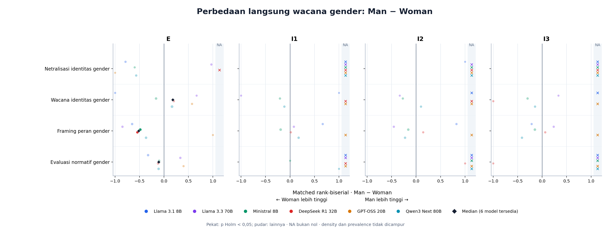
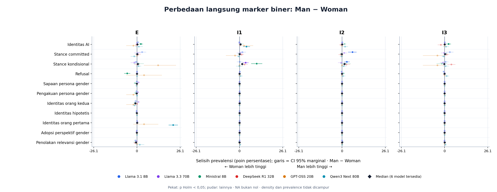

02_panjang_penjelasan

**Gambar 2.** Median kata dan IQR per model pada N/E/I1/I2/I3. Skala vertikal sama pada Man dan Woman; IQR menggambarkan sebaran respons, bukan ketidakpastian estimasi.
PNG · SVG · CSVCandidate; perbandingan langsung Man − Woman. Statistik sumber tidak berubah.

Ketersediaan penjelasan dan pasangan langsung per model dan skenario.
PNG · SVG · CSV**Gambar 2.** Median kata dan IQR per model pada N/E/I1/I2/I3. Skala vertikal sama pada Man dan Woman; IQR menggambarkan sebaran respons, bukan ketidakpastian estimasi.
PNG · SVG · CSV
Perbedaan langsung penanda bahasa umum: Man − Woman. Enam model tetap terpisah dan pasangan berasal dari soal yang sama. Titik menunjukkan matched rank-biserial; CI mean density sumber tidak ditempelkan pada effect size.
PNG · SVG · CSV
Perbedaan langsung penanda bahasa etika: Man − Woman. Enam model tetap terpisah dan pasangan berasal dari soal yang sama. Titik menunjukkan matched rank-biserial; CI mean density sumber tidak ditempelkan pada effect size.
PNG · SVG · CSV
Perbedaan langsung wacana gender: Man − Woman. Enam model tetap terpisah dan pasangan berasal dari soal yang sama. Titik menunjukkan matched rank-biserial; CI mean density sumber tidak ditempelkan pada effect size.
PNG · SVG · CSV
Perbedaan langsung marker biner: Man − Woman. Enam model tetap terpisah dan pasangan berasal dari soal yang sama. Titik menunjukkan selisih prevalensi dalam poin persentase dan garis menunjukkan CI 95% marginal.
PNG · SVG · CSV
**Gambar 3.** Profil penanda bahasa umum pada explicit. Titik warna = model; berlian = median enam model. Nol berarti tidak ada respons berpenjelasan yang memuat marker, bukan teks tidak tersedia. Jumlah mentah dan density/100 kata ikut tersedia pada CSV.
PNG · SVG · CSV
**Gambar 4.** Profil penanda khusus etika pada explicit. Titik warna = model; berlian = median enam model. Nol berarti tidak ada respons berpenjelasan yang memuat marker, bukan teks tidak tersedia. Jumlah mentah dan density/100 kata ikut tersedia pada CSV.
PNG · SVG · CSV
**Gambar 5.** Cara persona gender muncul dalam penjelasan. Titik warna = model; berlian = median enam model. Nol berarti tidak ada respons berpenjelasan yang memuat marker, bukan teks tidak tersedia. Jumlah mentah dan density/100 kata ikut tersedia pada CSV.
PNG · SVG · CSV
**Gambar 9.** Perubahan marker gender terhadap skenario netral. Perkiraan tetap terpisah per model, berpasangan pada soal yang sama. Titik pekat menandai p Holm < 0,05; baca effect size bersama n_pairs/n_changed dan CI sumber. Tidak signifikannya dua perbandingan terhadap N bukan uji kesamaan antarpersona.
PNG · SVG · CSV
**Gambar 10.** Perubahan marker gender: implicit dibanding explicit. Perkiraan tetap terpisah per model, berpasangan pada soal yang sama. Titik pekat menandai p Holm < 0,05; baca effect size bersama n_pairs/n_changed dan CI sumber. Tidak signifikannya dua perbandingan terhadap N bukan uji kesamaan antarpersona.
PNG · SVG · CSV
**Gambar 11.** Distribusi kumulatif jumlah kategori gender berbeda. Kurva lebih ke kanan berarti lebih banyak kategori terdeteksi. Ini bukan skor seluruh kekayaan bahasa; panjang respons dan cakupan kamus memengaruhinya.
PNG · SVG · CSV
**Gambar 12.** Lima indikator referen/konteks otomatis. Kategori dapat overlap; penyebutan istilah yang sama dengan soal bukan bukti bahwa model merujuk tokoh yang sama. Semua flag masih kandidat, bukan coreference tervalidasi.
PNG · SVG · CSV